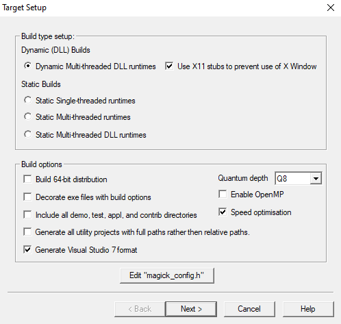

GraphicsMagick
GraphicsMagick
GraphicsMagick
GraphicsMagick
This section provides information specific to GraphicsMagick installed via a "setup.exe" style installation wizard under Microsoft Windows. It applies only to the pre-built "binaries" package, and not to versions compiled from source code. If you would like to install GraphicsMagick from source code, then please refer to the Installing From Source Code section.
While multiple versions of GraphicsMagick may be installed at one time, if your intention is to replace a prior installation of GraphicsMagick with a newer version, then it is wise to uninstall the existing GraphicsMagick (see uninstall procedure) prior to installing the newer version.
While it is not a requirement, it is strongly recommended that the Ghostscript package (GraphicsMagick is tested with version 9.27) be installed. GraphicsMagick uses Ghostscript to render Postscript and PDF files, as well as formats where a translator to Postscript is available. GraphicsMagick will use the Ghostscript Fonts (also known as "URW Fonts") to support the standard set of Adobe Postscript fonts like "Helvetica" and "Times Roman" if these fonts are not available as TrueType fonts. The Ghostscript fonts need to manually installed with administrator privileges in the Ghostscript installation directory (e.g. as C:\Program Files\gs\fonts or C:Program Files\gs\gs9.27\fonts).
The algorithm used to find the fonts consults the Windows registry to learn Ghostscript installation paths, and then looks for a "fonts/n019003l.pfb" file in each path until it finds a match.
Make sure to install a Ghostscript which is compatible with the GraphicsMagick you are installing. For example, if you are installing a 64-bit GraphicsMagick, you should install a 64-bit Ghostscript. The installation order of the two packages is not important. Both 32 and 64-bit versions of GraphicsMagick and Ghostscript may be installed at the same time.
Retrieve the GraphicsMagick Windows binary install package from a one of the ftp sites listed at the GraphicsMagick Download Sites page. The available install packages are as follows
Windows Dynamic-Multithread (DLL-based) install package with utilities, ImageMagickObject COM object, and web pages:
GraphicsMagick-1.3-Q8-win32-dll.exe GraphicsMagick-1.3-Q16-win32-dll.exe GraphicsMagick-1.3-Q8-win64-dll.exe GraphicsMagick-1.3-Q16-win64-dll.exeNote that the QuantumDepth=8 version (Q8) which provides industry standard 24/32 bit pixels consumes half the memory and about 30% less CPU than the QuantumDepth=16 version (Q16) which provides 48/64 bit pixels for high-resolution color. A Q8 version is fine for processing typical photos intended for viewing on a computer screen. If you are dealing with film, scientific, or medical images, use ICC color profiles, or deal with images that have limited contrast, then the Q16 version is recommended.
The win32 packages are for 32-bit or 64-bit Windows, whereas the win64 packages are only for 64-bit Windows. The 64-bit version allows processing larger images in memory (rather than disk files), provided that the system has more than 2GB of RAM installed. Memory access is 1000 times faster than disk access.
Execute the downloaded file from your browser or by double-clicking on the filename from within Windows Explorer. The GraphicsMagick Setup Wizard will appear. Click on "Next>" to continue.
An informational screen is presented which provides a summary of things you should know before you proceed. Please take care to read this information. Once you have finished, Click on "Next>" to continue.
Specify what drive and directory to install GraphicsMagick into. Approximately 15MB of free disk space is required to install all of GraphicsMagick (you may choose to install a subset to save space). A message at the bottom of the screen will tell you exactly how much space is required to install the complete package. The default installation directory is similar to C:\Program Files\GraphicsMagick-1.3-Q8. Once you have entered the desired installation directory, then select "Next>" to continue.
A screen is displayed which presents some (or all) of the following options:
- Create a desktop icon
- Update executable search path
- Associate supported file extensions with GraphicsMagick
"Creating a desktop icon" and "Update the executable search path" are selected by default. The remaining options default to un-selected. Select the options you prefer.
Think twice before selecting "Associate supported file extensions with GraphicsMagick" since this will set up approximately fifty file associations, including common formats like JPEG, GIF, PNG, TIFF, and PDF. These file associations will be to the 'gmdisplay' program which is suitable for displaying images, but currently offers little more than that. Associations for GraphicsMagick's native formats (such as MIFF) will always be made.
Once you have made your selections, click on "Next>" to continue.
A screen is displayed which displays the selected options. If you are not satisfied with a selected option, then click on "<Back" to go back to a previous screen so that the option may be adjusted. If you are satisfied with the options and are ready to install, then select "Install". To abort the installation entirely, select "Cancel".
While the install program is performing the installation, it will display what it is doing in an installation progress window.
A summary of post-install steps is provided. These steps include some commands you can execute to make sure that GraphicsMagick is working, as well as some notes about what has been installed on your system, and where to find additional information. Once you have read this information, click on "Next>" to continue.
By default "View GraphicsMagick.html" is check-marked. This causes the GraphicsMagick web pages to be displayed in your web browser when "Finish" is selected. If you do not want to view the web pages, then de-select "View GraphicsMagick.html". Select "Finish" to exit the installation program.
Select "Command Prompt" from the Windows Start menu. Within the window type
gm convert logo: logo.miff gm convert logo.miff win:and the GraphicsMagick logo should be displayed in a window.
The GraphicsMagick package incorporates its own uninstall functionality. Always remove an installed GraphicsMagick via its uninstall function since manually removing it (such as by removing its installation directory) will leave behind the registry entries and path settings established at install time.
GraphicsMagick should be removed via the "Add or Remove Programs" area of the Windows Control Panel. Select the GraphicsMagick package from the list, and click on "Change/Remove" to uninstall it.
The GraphicsMagick gm utility may be executed as a sub-process by other programs. If gm utility is not in the systems executable search path (it should be since the GraphicsMagick install extends the path by default), then the utility should be executed via the complete path to the executable.
The ImageMagickObject COM object may be used to execute the gm sub-functions (e.g. "convert") without spawning a new process or causing Windows to pop up a window. The COM object supports multi-threaded concurrent use. Note that the COM object (and other components depending on proprietary libraries) is no longer included in the installation packages we create. If you need this, then you will need to build GraphicsMagick from source code.
When GraphicsMagick is installed, entries are added to the Windows Registry so that other programs may obtain information regarding the most recently installed GraphicsMagick. These entries are available under the registry path HKEY_LOCAL_MACHINE\SOFTWARE\GraphicsMagick\Current.
These registry keys are currently available:
Key Name Key Type Description BinPath REG_SZ Directory where GraphicsMagick executables are installed ConfigurePath REG_SZ Directory where configuration files are installed LibPath REG_SZ Directory where GraphicsMagick core DLLs are installed CoderModulesPath REG_SZ Directory where GraphicsMagick loadable coder modules are installed FilterModulesPath REG_SZ Directory where GraphicsMagick loadable filter modules are installed SharePath REG_SZ Directory where configuration files are installed
This section provides instructions for building GraphicsMagick Microsoft Windows using the Visual C++ (Visual Studio, etc.) IDE. For building using the free Cygwin or MinGW compilers (e.g. as part of MSYS2), follow the instructions in INSTALL-unix.txt.
On some platforms Visual C++ may fail with an internal compiler error. If this happens to you, then make sure that your compiler is updated with the latest fixes from the Microsoft web site and the problem will hopefully go away. If the problem does not go away, then adjust the settings for the module which failed and disable optimization, and the problem is likely to go away (but with less performance).
The Visual C++ distribution targeted at Windows 2000 through Windows 10 does not provide any stock workspace (DSW) or project files (DSP) except for those included with third party libraries. Instead, there is a "configure" program that must run to create build environments to satisfy various requirements.
The configure program resides in VisualMagick\configure in the GraphicsMagick source tree. A pre-compiled configure.exe is provided, as well as Visual Studio project files to recompile it from source code if needed.
Once started, the configure program provides this configuration dialog after proceeding past the initial notifications screen:
In addition to (or as a replacement to) the above dialog, the configure.exe program supports these command-line options:
- /Q8 /Q16 /Q32
- Set quantum depth
- /x64
- Add x64 configuration
- /mtd /sts /mts /mtsd
- Set project type
- /noWizard
- Do not show the wizard
- /openMP
- Enable openMP
The Visual C++ system provides three different types of "runtimes" that must match across all application, library, and DLL code that is built. The "configure" program creates a set of build files that are consistent for a specific runtime selection.
The three options for runtime support are:
- Dynamic Multi-threaded DLL runtimes (VisualDynamicMT), /mtd option
- Static Single-threaded runtimes (VisualStaticST), /sts option
- Static Multi-threaded runtimes (VisualStaticMT), /mts option
- Static Multi-threaded DLL runtimes (VisualStaticMTDLL), /mtsd option
In addition to these runtimes, the VisualMagick build environment allows you to select whether to include the X11 libraries in the build or not. X11 DLLs and headers are provided with the VisualMagick build environment. Most Windows users do not use X11 so they will prefer to build without X11 support. When X11 is not supported, gm subcommands 'animate', 'display', and 'import' will not work.
This leads to five different possible build options, which should cover almost any particular situation. The default binary distribution is built using #1 from above with the X11 libraries excluded. This results build using all DLL's for everything and multi-threaded support (the only option for DLL's).
To do a build for your requirements, simply go to the configure sub- directory under VisualMagick and open the configure.dsw workspace (for Visual C++ 6.0) or configure.sln (for Visual C++ 7.X through 9.X). Set the build configuration to "Release" under the
"Build..., Set Active Configuration..." menu.Build and execute the configure program and follow the on-screen instructions. You should not change any of the defaults unless you have a specific reason to do so.
The configure program provides a button entitled
Edit "magick_config.h"Clicking this button brings up magick_config.h in Windows notepad for optionally changing any preprocessor defines in GraphicsMagick's magick_config.h file. This file is copied to magick\magick_config.h. You may safely open magick\magick_config.h, modify it, and recompile without re-running the configure program. In fact, using Visual Studio to edit the copied file may be preferable since it preserves the original magick_config.h file.
Key user tunables in magick_config.h include:
QuantumDepth (default 8)
Specify size of PixelPacket color Quantums (8, 16, or 32) A value of 8 uses half the memory than 16 and may run 30% faster, but provides 256 times less color resolution than a value of 16.UseInstalledMagick (default undefined)
Define to build a GraphicsMagick which uses registry settings or embedded paths to locate installed components (coder modules and configuration files). The default is to look for all files in the same directory as the executable.ProvideDllMain (default undefined)
Define to include a DllMain() function ensures that the GraphicsMagick DLL is properly initialized without participation from dependent applications. This avoids the requirement to invoke IntializeMagick() from dependent applications but only works for DLL builds.EnableBrokenCoders (default undefined)
Define to enable broken/dangerous file format support. Only enable this if you have complete control over the input files and not for arbitrary files such as uploaded from untrusted sources via the Internet. Currently this must be enabled to enable Adobe Photoshop Format (PSD).After creating your build environment you can proceed to open the DSW (or SLN) file that was generated in the VisualMagick directory and build everything from there.
In the final DSW file you will find a project call "All". In order to build everything in the distribution, select this project and make it the "active" project. Set the build configuration to the desired one (Debug, or Release) and do a "clean" followed by a "build". You should do the build in a specific way:
- Make the "All" project the active project (Bold) Right click on the All project and select "Set As Active Project"
- Select "Build..., Clean"
- Select "Build..., Build"
- Go get some coffee unless you have a very fast machine!.
The "Clean" step is needed in order to make sure that all of the target support libraries are updated with any patches needed to get them to compile properly under Visual C++.
All of the required files that are needed to run any of the command line tools will be found in the "bin" subdirectory of the VisualMagick subdirectory. This includes EXE, and DLL files. You should be able to test the build directly from this directory without having to move anything to any of the global SYSTEM or SYSTEM32 areas in the operating system installation.
Note #1:
The Visual C++ distribution of GraphicsMagick comes with the Magick++ C++ wrapper by default. This add-on layer has a large number of demo and test files that can be found in GraphicsMagick\Magick++\demo, and GraphicsMagick\Magick++\tests. There are also a variety of tests that use the straight C API as well in GraphicsMagick\tests.
All of these programs are NOT configured to be built in the default workspace created by the configure program. You can cause all of these demos and test programs to be built by checking the box in configure that says:
"Include all demo and test programs"In addition, there is another related checkbox (checked by default) that causes all generated project files to be created standalone so that they can be copied to other areas of you system.
This is the checkbox:
"Generate all utility projects with full paths rather then relative paths"WOW - that a mouthfull - eh?
Visual C++ uses a concept of "dependencies" that tell it what other components need to be build when a particular project is being build. This mechanism is also used to ensure that components link properly. In my normal development environment, I want to be able to make changes and debug the system as a whole, so I like and NEED to use dependencies. However, most end users don't want to work this way.
Instead they really just want to build the package and then get down to business working on their application. The solution is to make all the utility projects (UTIL_xxxx_yy_exe.dsp) use full absolute paths to all the things they need. This way the projects stand on their own and can actually be copied and used as templates to get a particular custom application compiling with little effort.
With this feature enabled, you should be able to nab a copy of...
VisualMagick\utilities\UTIL_gm_xxx_exe.dsp (for C)
-or-VisualMagick\Magick++\demo\UTIL_demo_xxx_exe.dsp (for C++)
... and pop it into notepad, modify it (carefully) to your needs and be on your way to happy compiling and linking.
You can feel free to pick any of the standard utilities, tests, or demo programs as the basis for a new program by copying the project and the source and hacking away.
The choice of what to use as a starting point is very easy...
For straight C API command line applications use something from
GraphicsMagick\tests or GraphicsMagick\utilities (source code)
GraphicsMagick\VisualMagick\tests or GraphicsMagick\Visualmagick\utilities (project - DSP)
For C++ and Magick++ command line applications use something from
GraphicsMagick\Magick++\tests or GraphicsMagick\Magick++\demo (source code)
GraphicsMagick\VisualMagick\Magick++\tests or GraphicsMagick\VisualMagick\Magick++\demo (project - DSP)
For C++ and Magick++ and MFC windows applications use
GraphicsMagick\win2k\IMDisplay (source code)
GraphicsMagick\VisualMagick\win32\NtMagick (project - DSP)
Note #2:
The GraphicsMagick distribution is very modular. The default configuration is there to get you rolling, but you need to make some serious choices when you wish to change things around.
The default options are all targeted at having all the components in one place (e.g. the "bin" directory of the VisualMagick build tree). These components may be copied to another folder (such as to another computer).
The folder containing the executables and DLLs should contain the following files:
- colors.mgk
- delegates.mgk
- log.mgk
- magic.mgk
- modules.mgk
- type.mgk
- type-ghostscript.mgk (if Ghostscript is used)
The "bin" folder should contains all EXE's and DLL's as well as the very important "modules.mgk" file.
With this default setup, you can use any of the command line tools and run scripts as normal. You can actually get by quite nicely this way by doing something like pushd e:\xxx\yyy\bin in any scripts you write to execute "out of" this directory.
By default the core of GraphicsMagick on Win32 always looks in the place were the exe program is run from in order to find all of the files as well as the DLL's it needs.
You can use the "System" control panel to allow you to add and delete what is in any of the environment variables. You can even have user specific environment variables if you wish.
PATH
This sets the default list of places were Windows looks for EXE's and DLL's. Windows CMD shell seems to look in the "current" directory first - no matter what, which may make it unnecessary to update the PATH. If you wish to run any of utilities from another location then you must add the path to your "bin" directory in. For instance, you might add:
D:\Devel\GraphicsMagick\VisualMagick\binto do this for the default build environment like I do.
MAGICK_HOME
If all you do is modify the PATH variable, the first problem you will run into is that GraphicsMagick may not be able to find any of its "modules. Modules are all the IM_MOD*.DLL files you see in the distribution. There is one of these for each and every file format that GraphicsMagick supports. This environment variable tells the system were to look for these DLL's. The compiled in "default" is "execution path" - which says - look in the same place that the application is running "in". If you are running from somewhere other then "bin" - this will no longer work and you must use this variable. If you elect to leave the modules in the same place as the EXE's (a good idea) then you can simply set this to the same place as you did the PATH variable. In my case:
D:\\GraphicsMagick\codersThis is also the place were GraphicsMagick expects to find the "colors.mgk", "delegates.mgk", "magic.mgk", "modules.mgk", and "type.mgk" files.
One cool thing about the modules build of GraphicsMagick is that you can now leave out file formats and lighten you load. If all you ever need is GIF and JPEG, then simply drop all the other DLL's into the local trash can and get on with your life.
WARNING: Always keep the "xc" format, since GM uses it for internal purposes.
ALSO. You can elect to changes these things the good old "hard-coded" way. Two #defines are applicable.
defines.h has
#define MagickConfigurePath "c:\\GraphicsMagick\\"To view any image in a Microsoft window, type
gm convert image.ext win:Make sure Ghostscript is installed, otherwise, you will be unable to convert or view a Postscript document, and Postscript standard fonts will not be available.
You may use any standard web browser (e.g. Internet Explorer) to browse the GraphicsMagick documentation.
The Win2K executables will work under Windows '98 and later.
The following are the instructions for how to build a Q:8 (or Q:16) DLL-based distribution installer package using Visual Studio 2008 Professional. This is the same procedure used to produce the release packages. The PerlMagick steps are skipped as of GraphicsMagick 1.3.26):
- Install prerequisite software:
- Install Microsoft Visual Studio.
- Download and install Inno Setup 6 <"http://www.jrsoftware.org/isinfo.php">.
- Download and install ActiveState ActivePerl (optional) <"http://www.activestate.com/activeperl/downloads/">.
Disable automatic indexing and virus scanning for the GraphicsMagick source tree. In particular, "Windows Defender" in Windows 10 (and similar software in earlier Windows releases) has been observed to cause Visual Studio builds to fail since the virus scanner opens built libraries and executables to inspect whem while Visual Studio is still using them. Indexing and scanning also cause significant slowdowns since there are many megabytes of files to index.
Build GMVisualMagickconfigureconfigure.exe (if missing/outdated)
- Open workspace GMVisualMagickconfigureconfigure.dsp by double-clicking from Windows Explorer.
- Upgrade Visual Studio project (as required)
- Select Rebuild All to build configure.exe
- Close the project.
Configure Initial GraphicsMagick Visual Studio Workspace
- Use Windows Explorer to navigate to GMVisualMagickconfigure.
- Double-click on configure.exe to run configure program.
- Select desired build options: DLL build, Quantum Depth, 64-bit, OpenMP)
- Check Build demo and test programs.
- Finish remaining configure wizard screens to complete.
- File -> Close Workspace.
Open Workspace, set build configuration, build GraphicsMagick software.
- Open workspace GMVisualMagickconfigureconfigure.sln by double-clicking from Windows Explorer.
- Build -> "Set Active Configuration" -> "All - Win32 Release" -> OK
- Optionally enable 64-bit (WIN64) compilation. "Build / Configuration Manager... / Active Solution Platform / New / x64".
- Open CORE_magickmagickmagick_config.h and edit any configuration settings you would like to change. For example, you might change QuantumDepth to 16 for a"Q:16" build.
- If using Visual Studio Professional Edition, and OpenMP support is desired, then select CORE_magick in the Solution Explorer pane and use the right mouse button menu to select Properties. In Configuration Properties / C/C++ / Language set OpenMP support to 'yes'.
- Select "Rebuild All"
- Click on '!' icon to run configure program
- Select DLL build
- Check Build demo and test programs.
- Click on Edit magick_config.h and verify desired settings such as QuantumDepth. You can also defer this step to later by opening the header file CORE_magick\include\magick_config.h in the Visual Studio project.
- Finish remaining configure wizard screens to complete.
- File -> Close Workspace
Build ImageMagickObject
- Open Visual Studio Command Shell Window for WIN32 or WIN64
- Change to GraphicsMagick project directory GM
- cd GM\contrib\win32\ATL7\ImageMagickObject
- BuildImageMagickObject clean
- BuildImageMagickObject release
- cd ..\..\..\..
Build PerlMagick extension (optional and now rarely done)
Open Visual Studio Command Shell Window for WIN32 or WIN64
Change to GraphicsMagick project directory GM
cd GM\PerlMagick
nmake clean (only if this is a rebuild)
C:\Perl32\bin\perl.exe Makefile.nt (or Perl64)
Note that if multiple Perl's are installed, then it may be necessary to specify the full path to perl.exe in order to use the correct Perl.
nmake release
NOTE: access to nmake requires that there be a path to it. Depending on how the install of Visual Studio was done, this may not be the case. Visual Studio provides a batch script in VC98Bin called VCVARS32.BAT that can be used to do this manually after you open up a command prompt.
- Open GMVisualMagickinstallergm-win32-Q8-dll-full.iss (or gm-win32-Q16-dll-full.iss if QuantumDepth=16) by double-clicking from Windows Explorer.
- File -> Compile
- Test install by clicking on green triangle
- Test PerlMagick (optional).
- cd PerlMagick
- nmake test (All tests must pass!)
- Test file format read and write.
- cd VisualMagick\tests
- run_rwfile.bat (All tests must pass!)
- run_rwblob.bat (All tests must pass!)
- Run Magick++ test programs.
- cd Magick++/tests
- run_tests.bat (All tests must pass!)
- Run Magick++ demo programs.
- cd Magick++/demo
- run_demos.bat
- Use gmdisplay to visually inspect all output files.
- Distribution package is available named similar to GM\VisualMagick\bin\GraphicsMagick-1.3-Q8-dll.exe
Copyright © GraphicsMagick Group 2002 - 2020